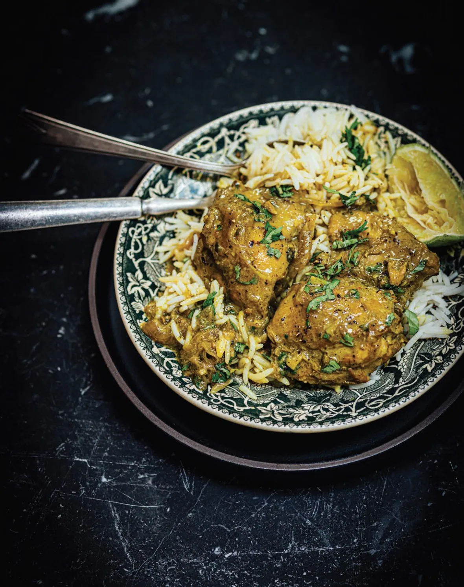

Black Pepper Chicken - The Flavour Equation

Desciption:
This is a recipe for Black Pepper Chicken as first developed by Nik Sharma and published in his book, The Flavour Equation.
Ingredients (serves 4-6):
- 2 tablespoons black peppercorns
- 1 teaspoon coriander seeds, ground
- 1 teaspoon fennel seeds, ground
- 2 teaspoons turmeric, ground
- Fine sea salt (to taste)
- 3 pounds [1.4 kg] boneless, skinless chicken thighs
- 2 tablespoons oil/fat
- 2 large onions (about 800g total) cut in half and thinly sliced
- 4 garlic cloves, peeled and minced
- 2 inches [5 cm] piece of fresh ginger
- 1 13.6 fl oz [403 ml] can full-fat unsweetened coconut milk
- 2 tablespoons chopped herbs for garnish
Instructions:
- Grind the peppercorns to a coarse powder. In a small dry skillet or saucepan, toast the pepper, coriander, and fennel until they just turn fragrant, 30 to 45 seconds. Immediately transfer to a small bowl and stir in turmeric, lime juice, and salt to form a paste.
- Place the chicken in a large bowl or resealable bag and massage it with the spice paste. Refrigerate for at least 4 hours and preferably overnight, to marinate.
- When ready to cook, heat the oil in a large saucepan over medium-high heat. Add the onions and saute for 4-5 minutes, until they just turn translucent. Add the garlic and ginger and saute until fragrant, about 1 minutes. Add the chicken and its marinade along with the coconut milk. Bring to a simmer and maintain it over low or medium-low heat. Cook for 10-15 minutes, until the chicken is fully cooked and the liquid becomes a thick sauce. Stir occasionally to prevent burning. Remove from heat, taste, and season with salt as needed. Garnish if you want and serve hot/warm.